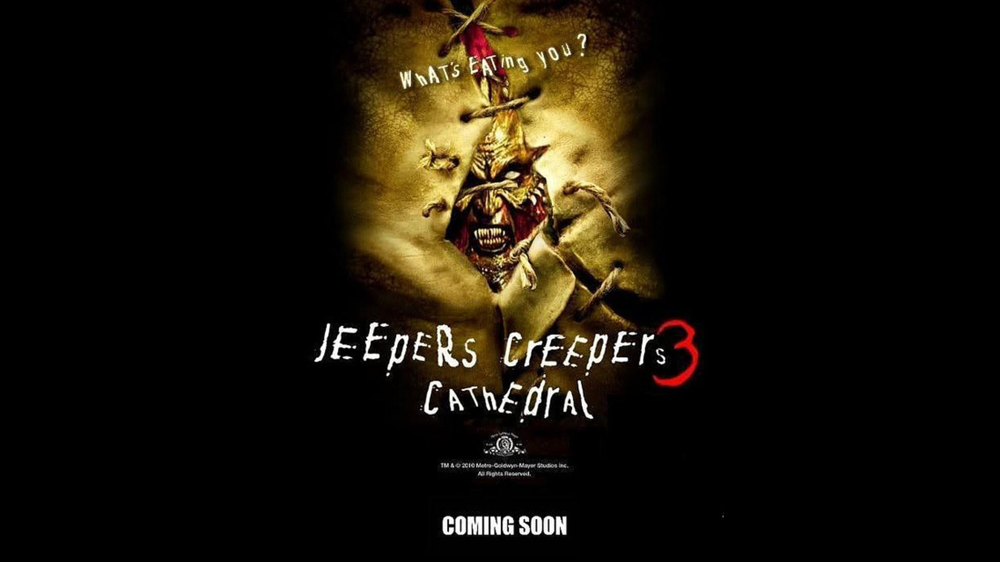

Jeppers Creppers 386% de coincidencia 1 h 40 minUn equipo liderado por una médium y un sargento intenta matar al monstruo que lleva décadas aterrorizando la región y liberar a Addi Brandon. Mientras más se acercan a su oscuro origen, más sanguinaria resulta la venganza.REPRODUCIRTRAILERProtagonistas: Gina Philips, Jonathan Breck, Meg Foster. Genero: Terror.
 REPRODUCIR
TRAILER
REPRODUCIR
TRAILER